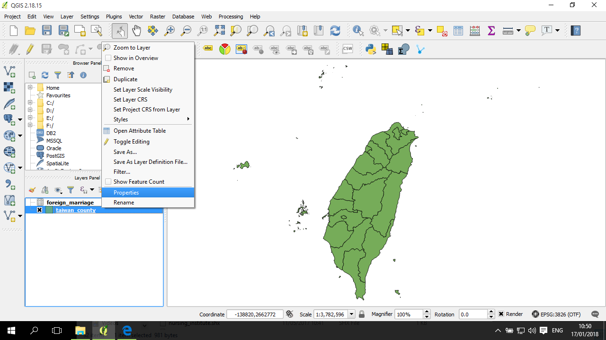
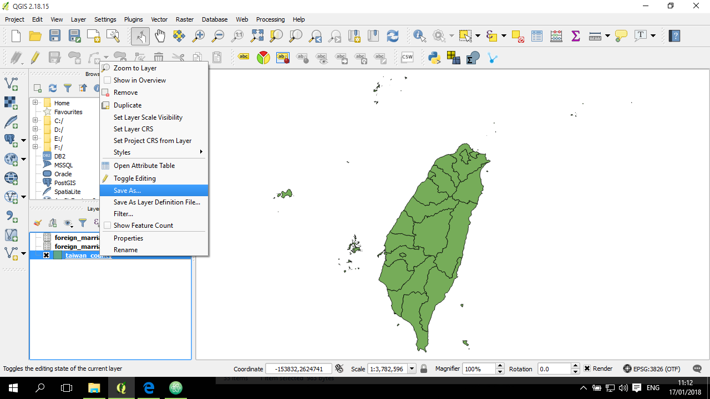

屬性的連結 (join)
屬性的連結是一個很常進行的操作過程。概念上是，有一個空間圖層資料，例如縣市資料；另一方面有一個表單，表單內容的每一筆(row)是一個個縣市，欄位包含了其他空間圖層資料所沒有的屬性資料 (例如外籍配偶數之類)。這時候需要讓 QGIS 幫我們將這些表單中的資料依縣市連結到空間圖層的屬性資料中。
這過程順利的話很快就完成了，但常常會遇到一些狀況，以下舉一些常出現的疑難雜症及其對應的解決方案供大家參考。
資料
將表單資料匯入 QGIS 中
透過右邊的下拉選單(Encoding)，選到 Big5 (以這個檔案為例)：
這是因為目前的匯入過程並沒有告訴 QGIS 這檔案的空間資訊(geometry)。因為這個表單中沒有空間資訊(例如經緯度)，所以要宣導 No geometry (無幾何資訊)，然後就可以按 OK 確認匯入：
直接將 csv 檔拖拽到圖層的位置雖然也可以匯入，不過這時候 QGIS 會預設使用者是在加入圖層，所以這時候軟體會當作這個資料中都是「字串」。以我們的例子是要將外籍配偶人數(也就是整數資料)匯入，所以不能用這種方式，而應該用上面建議的方法。
觀察並確認連結的依據欄位：
打開屬性表：

再打開縣市圖層的屬性表，看起來 「COUNTYCODE」 是一樣的縣市 ID：
這時候發現一個問題，就是縣市圖層的中文字是亂碼，所以以下稍微調整圖層的 encoding。
來到圖層的 properties：

在 Data source encoding 的部分，改成 Big5:
連結表單
連結表單的地方在 圖層的 properties，進入 Joins 分頁：
點一下下方的「 + 」號按鈕，然後在 Join layer 選擇剛剛匯入的 csv，Join field 是 csv 中的連結欄位， Target field 則是圖層的連結欄位。點開 Choose which fields are joined，這裡示範的是將所有 csv 中的欄位都連結到圖層中：
再打開圖層的屬性表，連結這個動作算是完成了：

不過還有一些問題，以下分別說明。
問題一 - 有些縣市的 COUNTYCODE 不完整：
這部分看起來是圖層的 COUNTYCODE 不知道什麼時候發生問題，在臺北市、臺中市等，6字開頭的代碼都只剩兩位數字：
在COUNTYCODE 的各個需要修正的代碼，點兩下，然後加入 “000”：
原本那些臺中市等地區都 Join 好了：
但還有另一些問題，兩個外島Join不到。
問題二 - 有些縣市的在 csv 不完整：
這邊看起來外島的 COUNTYCODE 前面有 0，這在 csv 或 excel 表單中可能會少了這種在前面的 0:
觀察 csv 的代碼，果然是前面少了 0:
不過這時候沒辦法直接在 qgis 中作修改，需要到文字編輯器來處理。
把 csv 的表單打開來看看，卻發現縣市代碼沒有被修正好：
這問題很常見，是因為這個欄位都是數字， QGIS 自動將這個欄位當作是整數(Interger)，可是這欄位應該要是文字(String)。以下說明如何先給定 csv 各個欄位的資料格式。
設定好 csv 的欄位的資料格式
因為從 .txt 改成 .csvt ，所以 Windows 會提醒並向你確認「你真的要作這樣的修改嗎」，點確認：
這時候可以同時打開 csv 檔及 csvt 檔案，然後一個個將欄位的資料格式寫入，例如：
其中，String 表示這欄是文字，Integer 表示是 整數， Real 表示是實數(包括小數位數)。用英文的雙引號包起來，然後用逗點分隔。
csv 中總共有 9個欄位，所以這檔案也要有 9個資料格式：
完成後，儲存，關閉。
打 csv 的開屬性表，這時候可以發現代碼欄位是靠左的，表示是文字格式，兩個 rows 前面的 0 也出現了：
將 Join 好的空間圖層匯出 + 修改匯出後的欄位名稱：
對 Join 好的圖層點右鍵，選 Save as...

確認 Format 是 ESRI Shapefile：
若需要選其他類型的輸出檔案，也可以在這調整，例如 Geojson 之類。確認好匯出圖層的位置與檔名，以及 Encoding、投影座標系統等之後，就可以按 OK 確認匯出。
修改欄位名稱
匯出完成後，可以發現預設是修改了 Join 的欄位名稱：
跟原來 Join 的圖層(未匯出) 比對，可以發現這些預設的欄位名稱其實順序跟原來 Join 好是一樣的。
點儲存編輯：

刪除不必要欄位
發現有兩個欄位是重複的，這是前面在 Join 的時候為了確認而特意留下的，不過這時候已經確認 Join 沒問題，所以可以將他們刪除。打開編輯模式：